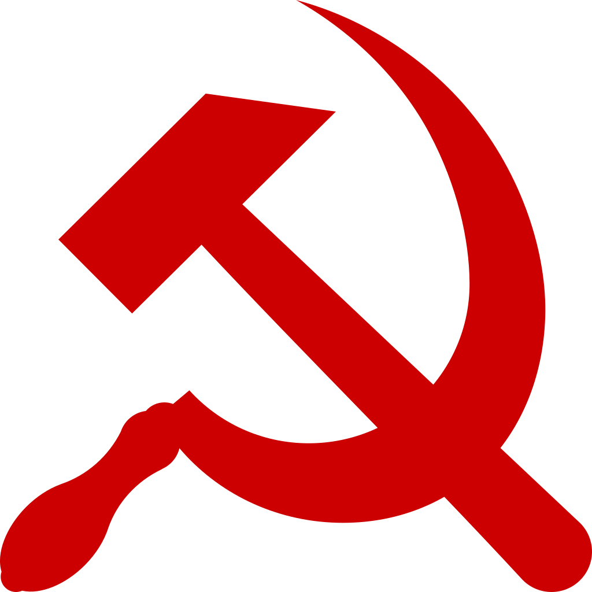

Постсоветское пространство
Постсоветское пространство, также известное как страны СНГ и Прибалтики или ближнее зарубежье (в отличие от зарубежья дальнего — стран, никогда не входивших в СССР) — все независимые государства, которые вышли из состава Советского Союза во время и после его распада в 1991 году.
Постсоветские государства являются предметом различных исследований в области географии, истории, политики, экономики и культуры.
Население и языковая ситуация
Население постсоветского пространства составляет более 293 миллионов человек по данным на первое полугодие 2015 года. Из них около половины составляют этнические русские, остальные в большинстве случаев сравнительно хорошо владеют русским языком, являясь билингвами. Во всех постсоветских государствах после распада СССР говорят преимущественно на национальных языках. Исключение составляет Белоруссия: на русском языке говорит подавляющее большинство населения, в результате чего русский язык был признан государственным, наравне с белорусским. Кроме Белоруссии русский язык наравне с национальным языком функционирует также в Казахстане, Киргизии и Таджикистане, выполняет ряд официальных функций в Узбекистане. Велика доля русскоязычных на Украине и в Молдавии. На постсоветском пространстве на первом месте по численности говорящих стоят восточнославянские языки (русский, украинский, белорусский), на втором — тюркские языки (азербайджанский, гагаузский, алтайский, башкирский, карачаево-балкарский, казахский, киргизский, каракалпакский, кумыкский, ногайский, узбекский, уйгурский, туркменский, татарский, тувинский, хакасский, чувашский, якутский и др.). 
Конфессиональный состав: христиане, мусульмане, буддисты и другие.
Государства и географические регионы
Постсоветские государства обычно делят на следующие пять групп. Принцип, по которому государство относят к той или иной группе, основывается на географических и культурных факторах, а также на истории взаимоотношений с Россией.
- Россия (в свою очередь состоит из нескольких географических регионов: Восточная Европа, Прибалтика, Северная Азия и Центральная Азия);
- Прибалтика (Северная Европа): Латвия, Литва и Эстония;
- Восточная Европа: Белоруссия, Молдавия и Украина;
- Закавказье (Передняя Азия и Восточная Европа[1]): Азербайджан, Армения и Грузия;
- Центральная Азия: Казахстан[2], Киргизия, Таджикистан, Туркмения и Узбекистан.